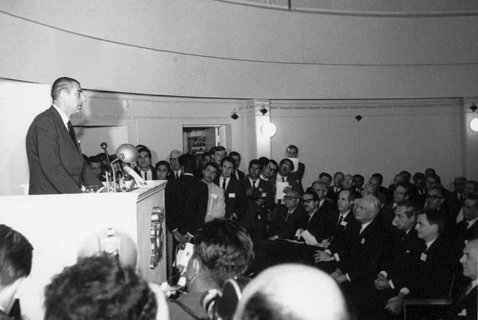

Astronomía en el norte de Chile

La astronomía científica moderna en Chile comenzó en 1849, cuando una expedición de la Marina de Estados Unidos, dirigida por James Melville Gilliss, instaló un pequeño observatorio en el cerro Santa Lucía de Santiago. En 1852, por decreto del presidente Manuel Montt, el Estado compró sus instalaciones y creó el Observatorio Astronómico Nacional, que en 1927 pasó a depender de la Universidad de Chile. En 1928, Manuel Foster donó a la Universidad Católica el observatorio del cerro San Cristóbal, y en 1965 se creó el Departamento de Astronomía de la Universidad de Chile.
El gran cambio llegó en la década de 1960, cuando instituciones científicas de Europa y Estados Unidos buscaban dónde observar el cielo del hemisferio sur. El clima seco y despejado del norte chileno resultó ideal. El 6 de noviembre de 1963, Chile firmó un convenio con el Observatorio Europeo Austral (ESO), y el 25 de marzo de 1969 el presidente Eduardo Frei Montalva inauguró el observatorio La Silla, en la región de Coquimbo, donde en esos años también se instaló el Observatorio Interamericano de Cerro Tololo. Siguieron Las Campanas (1971), en Atacama; el Very Large Telescope (VLT) de Paranal, inaugurado el 5 de marzo de 1999 en la región de Antofagasta; Gemini Sur (inaugurado en 2002), en el cerro Pachón; y ALMA, un conjunto de 66 antenas a unos 5.000 metros de altura en el llano de Chajnantor, en la región de Antofagasta, cerca de San Pedro de Atacama, inaugurado el 13 de marzo de 2013. En el cerro Armazones se construye el Extremely Large Telescope (ELT) de ESO.
Estos observatorios convirtieron a Chile en un centro mundial de la astronomía y transformaron la ciencia nacional. Los convenios garantizan tiempo de observación a las instituciones chilenas, y surgió una generación de astrónomos formados en el país. La astrónoma María Teresa Ruiz fue en 1997 la primera mujer en recibir el Premio Nacional de Ciencias Exactas.
También hay debates. Se discute cuánto beneficio deja al país una infraestructura que en su mayoría pertenece a consorcios extranjeros, y cómo convertirla en desarrollo tecnológico propio. Además, la luz artificial de ciudades, carreteras y faenas mineras amenaza la oscuridad de los cielos, y su protección se ha vuelto un tema ambiental. Por último, los observatorios se levantan en territorios con historia, donde pueblos como los lickanantay observaron el cielo desde mucho antes.
Versión para niños
En el norte de Chile casi nunca llueve, el aire es muy seco y en muchas partes hay pocas luces de ciudades. Por eso sus cielos son ideales para mirar las estrellas. Desde los años sesenta, científicos de muchos países construyeron allí grandes observatorios. El 25 de marzo de 1969 se inauguró el observatorio La Silla, en la región de Coquimbo. Después llegaron Paranal y ALMA, en el desierto de Atacama. Con sus telescopios se han descubierto planetas, estrellas y galaxias lejanas.
Para maestros
Nivel sugerido: 2° medio
Objetivo: Explicar por qué el norte de Chile se convirtió en un centro mundial de la astronomía, relacionando geografía, cooperación internacional y desarrollo científico. La fecha ancla es la inauguración de La Silla (1969), hito de la cooperación científica internacional en Chile. Las fuentes difieren sobre el año en que se inauguró Cerro Tololo, por eso la nota no lo fija.
Preguntas para la clase:
- ¿Qué características del norte de Chile lo hacen ideal para la astronomía?
- ¿Qué gana y qué entrega Chile con estos convenios internacionales?
- ¿Por qué la contaminación lumínica es un problema para la ciencia y para todos?
Actividad (20–30 min): Con el texto de esta nota, los estudiantes ubican cada observatorio por región (Coquimbo, Atacama, Antofagasta) en el mapa del sitio y construyen una línea de tiempo de 1849 a 2013. Luego observan la fotografía de la inauguración de 1969 y responden: ¿quiénes aparecen?, ¿qué nos dice la presencia del presidente sobre la importancia del hecho? Cierre: una noche, mirar el cielo desde la casa y anotar cuántas estrellas se ven y cuánta luz artificial hay alrededor.
Fuentes sugeridas: Memoria Chilena; Observatorio Europeo Austral (ESO); Observatorio ALMA.
Objetivos de Aprendizaje (Currículum Nacional)
- 5° básico · HI05 OA 11 Analizar y dar ejemplos de diversas maneras … el trabajo de las personas, sus ideas y proyectos potencian y dan valor a los recursos naturales
- 6° básico · HI06 OA 12 Comparar diversos ambientes naturales en Chile (desértico, altiplánico … considerando como criterios las oportunidades y las dificultades que presentan
Personajes
Fuentes
- Memoria Chilena — Astronomía en Chile (1849-2010)
- Observatorio Europeo Austral (ESO) — Línea de tiempo de ESO
- Observatorio Europeo Austral (ESO) — Los telescopios del VLT reciben sus nombres en la inauguración de Paranal (1999)
- Observatorio ALMA — ALMA Inauguration Heralds New Era of Discovery (2013)
- Observatorio Europeo Austral (ESO) — ALMA, Atacama Large Millimeter/submillimeter Array
- Observatorio Gemini — Gemini Observatory Celebrates Historic First for Observational Astronomy (2002)
Revisión humana pendiente. Cómo se revisa · Reportar un error
Cómo citar: Historia de Chile. (2026). Astronomía en el norte de Chile. En Historia de Chile: atlas y línea de tiempo. https://moises-salgado.github.io/historia-de-chile/momento/astronomia-en-el-norte-de-chile.html